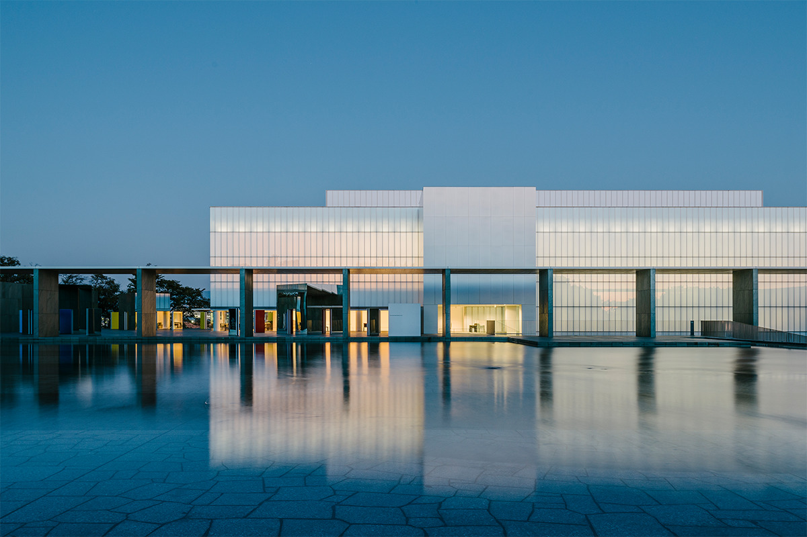
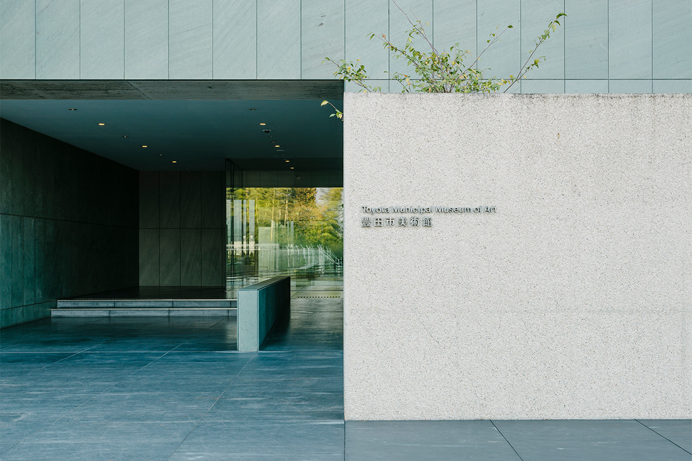
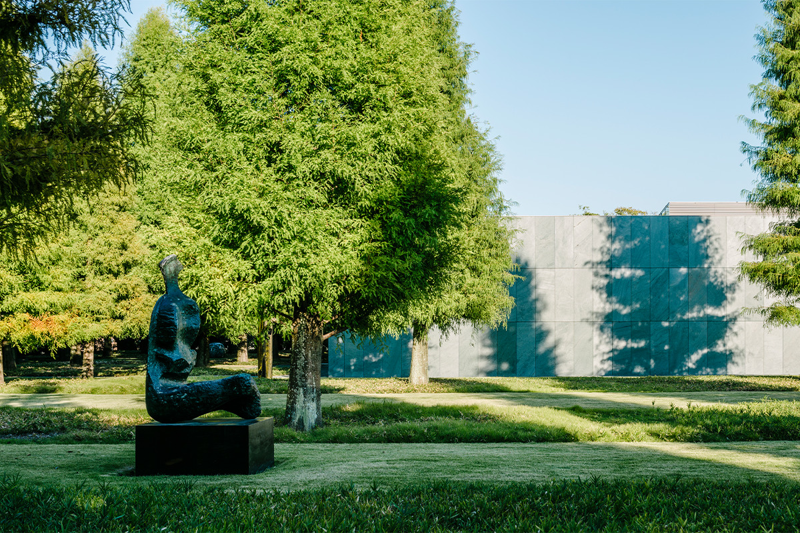
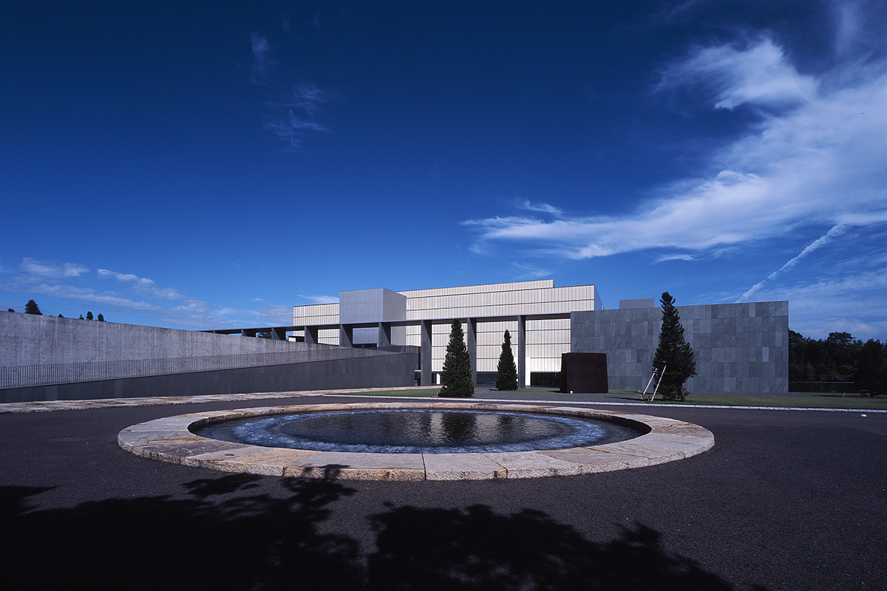
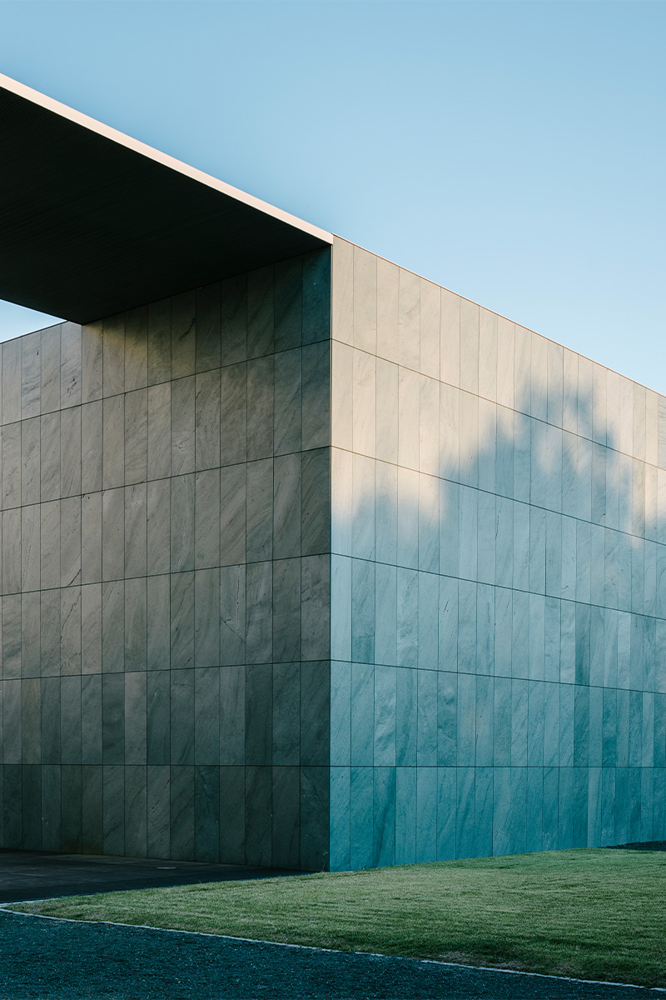
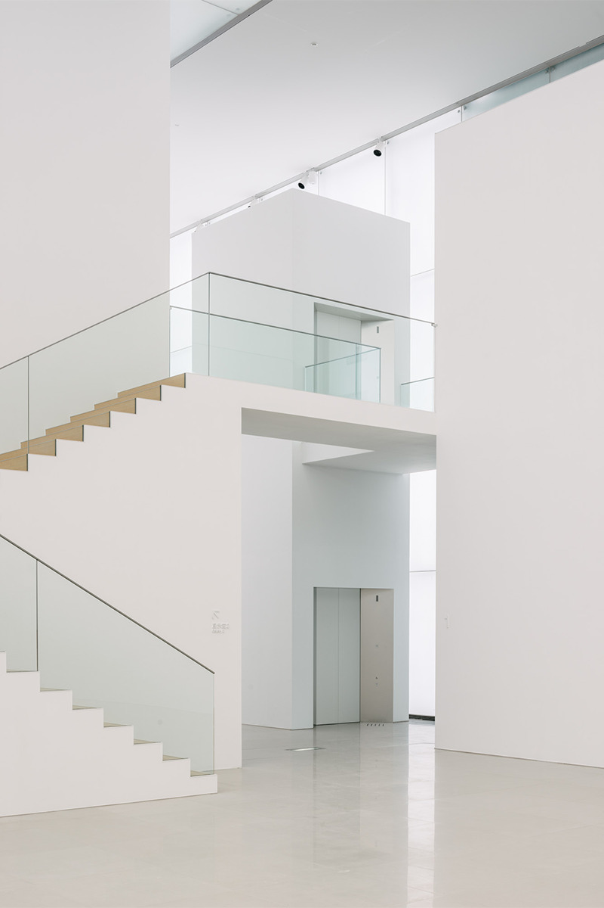
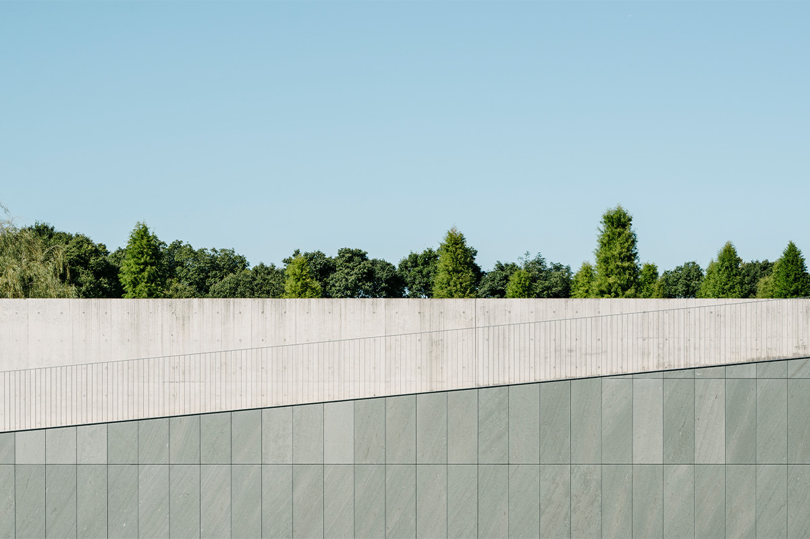
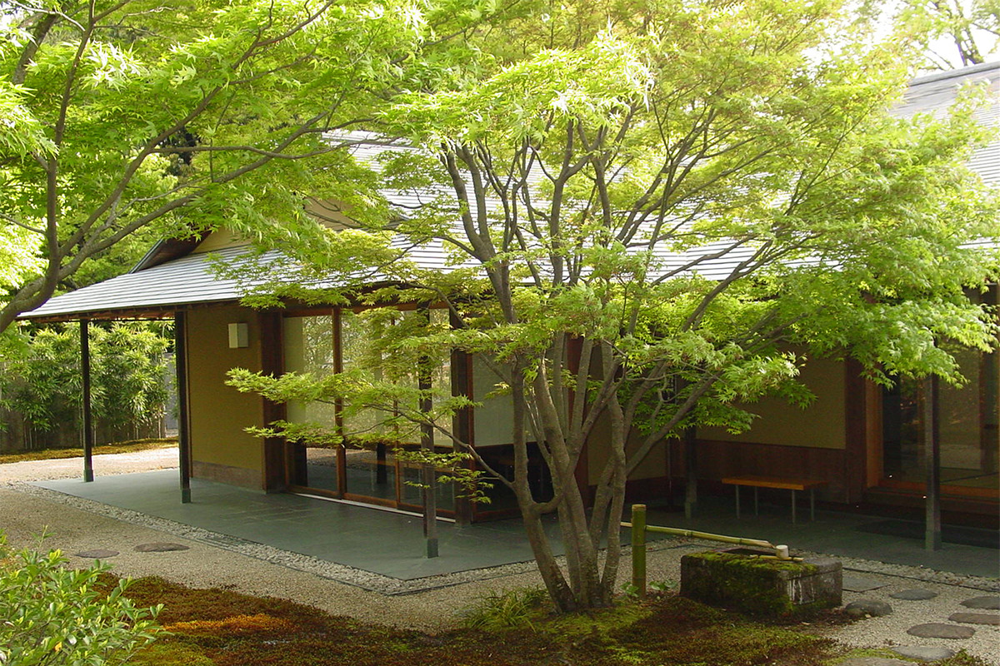
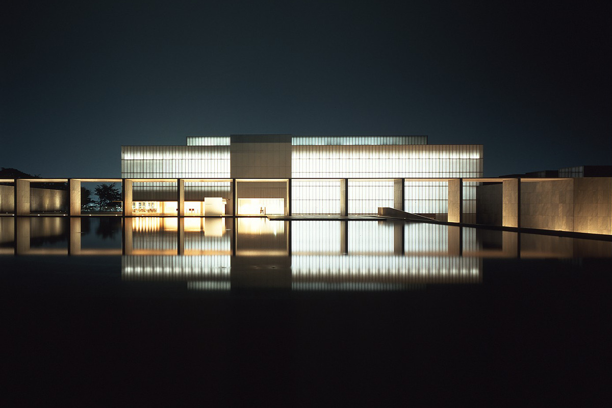

Префектура Айти · Тоёта · архитектура
Художественный музей Тоёты: сетка, вода и рассеянный свет Ёсио Танигути

Художественный музей города Тоёта стоит на холме среди зелени, и сюда едут не только ради коллекции. Здание спроектировал Ёсио Танигути, один из самых известных в Японии архитекторов музеев, а сад вокруг создал американский ландшафтный архитектор Питер Уокер.
Авторы
Архитектор и садовник
Ёсио Танигути (1937–2024) родился в Токио. Он окончил инженерный факультет университета Кэйо, в 1964 году получил диплом архитектора в Гарварде, работал в бюро Кэндзо Тангэ и в 1975 году открыл собственную мастерскую. Среди его работ музей современного искусства Гэнъитиро Инокумы в Маругамэ (1991), галерея сокровищ храма Хорюдзи при Токийском национальном музее (1999), реконструкция Музея современного искусства в Нью-Йорке (2004) и новый корпус Киотского национального музея (2014). Танигути дважды получал премию Архитектурного института Японии и был удостоен премии «Премиум Империале».
Питер Уокер родился в 1932 году в Калифорнии и работает по всему миру. В Японии вместе с Аратой Исодзаки он проектировал парк научного города Харима, а вместе с Танигути площадь перед станцией Маругамэ. В Нью-Йорке он создал мемориал 11 сентября (2011): там на месте башен-близнецов устроены два огромных бассейна, ставшие местом тихой памяти.
Музей
Место для разговора с искусством

Музей открылся в 1995 году. Его задумали как место, где человек и произведение вступают в диалог и у каждого посетителя складываются свои отношения с работами. В 2015 году, к двадцатилетию, здание обновили под руководством самого Танигути.
Архитектура
Между старым и новым городом
Музеи Танигути не просто залы для выставок. Он переводит в архитектуру то, как музей собирает коллекцию и как работает, и наделяет здание чертами именно этого места. В Тоёте музей поставлен на холм, где одинаково хорошо смотрятся и здание, и природа, а перепад высот участка стал частью замысла.

«Для меня важно проектировать здание, которое подходит своему месту и опирается на историю и природу участка. С участка видна угловая башня замка тех времён, когда Тоёта ещё называлась Коромо. А с противоположной стороны открывается вид на новый город. Там, где старый город встречается с новым, я устроил широкую террасу с кафе и поставил скульптуры, чтобы музей стал одним целым с окружающим пейзажем»
Ёсио Танигути
Вокруг здания приятно просто гулять. Музей открывается не сразу: поднимаешься по дорожке шаг за шагом, по пути видишь скульптуры под открытым небом и блики света на воде, и только потом на фоне неба появляется само здание.

Фасад над водой
Перед зданием раскинулась гладь воды, по которой бегут круги. Над ней тянется огромный горизонтальный фасад, и его строгая сетка производит сильное впечатление. Вечером залы с молочными стёклами начинают светиться изнутри, и музей, словно фонарь, повисает над водой. В этот момент здание само становится произведением.

Интерьер
Свет, который ведёт по залам
После огромного фасада вход кажется подчёркнуто скромным, и в этом контрасте есть своя игра. Потолок здесь низкий, свет приглушённый, а молочное матовое стекло мягко пропускает дневной свет снаружи. Справа зал временных выставок, слева светлый зал высотой в несколько этажей. По лестнице можно подняться в ещё более просторный и светлый зал.

Маршрут построен на смене света. Сначала попадаешь в открытое пространство, полное света, потом в небольшие залы, потом снова в светлый простор. Из-за этого на искусство смотришь каждый раз немного иначе.
В лаунже и в зале Сэцуро Такахаси снаружи внутрь продолжается пол из тёмно-зелёного сланца. Граница между улицей и залом стирается, а пейзаж в проёме окна выглядит как ещё одна картина.
Сад
Круг и квадрат Питера Уокера

Сад в два яруса построен на противопоставлениях: круг и квадрат, строгая геометрия и свободная форма. На дне верхнего пруда и в саду лежит рисунок из полос, нижний сад расчерчен шахматной клеткой из газона и гравия, а скульптуры расставлены так, чтобы эту геометрию сбить. Пологий пандус и длинная каменная дорожка усиливают перспективу, и пространство кажется ещё шире.
Когда-то на этом месте стоял замок Ситисю, резиденция правителей княжества Коромо. В углу участка восстановлена его угловая башня.
Чайный павильон
«Додзиэн»

К западу от музея, на участке, где стоял замок княжества Коромо, находится чайный павильон «Додзиэн». Холм здесь когда-то называли Додзияма. Деревянное здание в стиле сукия спроектировал тот же Танигути. После встречи с искусством здесь можно не спеша посидеть и посмотреть, как меняется сад в разные времена года.
В музее есть ресторан с видом на город и музейный магазин, где находишь и то, что искал, и то, о чём не думал.

Архитектура здесь служит рамой для искусства, но и сама по себе стоит поездки. Большой пруд, терраса со скульптурами, вид на город: в Художественном музее Тоёты легко провести весь день, никуда не торопясь. Входной билет на постоянную экспозицию в 2022 году стоил 300 иен.
Художественный музей города Тоёта
- Адрес
- префектура Айти, Тоёта, Косака-хонмати, 8-5-1
- Телефон
- +81 565-34-6610
- Часы работы
- 10:00–17:30, вход до 17:00; ресторан 10:00–17:30 (обед 10:30–15:00); чайный павильон «Додзиэн» 11:00–16:00
- Выходные
- понедельник (кроме праздничных дней), дни смены экспозиции, новогодние праздники
- Цены / Вход
- постоянная экспозиция: взрослые 300 иен, студенты и старшеклассники 200 иен, ученики средней школы и младше бесплатно; группы от 20 человек 250 и 150 иен; временные выставки по отдельной цене